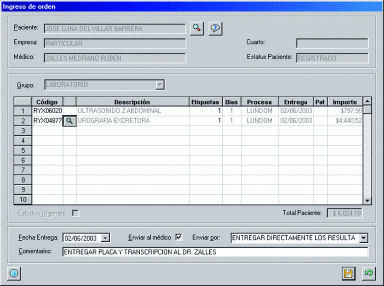

xRay - Sistema para el control y operación de gabinetes de rayos X e imagenología
xRay es un sistema para el apoyo operacional y el control administrativo integral de un gabinete de rayos X e imagenología.
xRay proporciona una herramienta eficiente para el manejo de pacientes, la programación de citas por equipo y recurso, la interpretación de los estudios de imagenología y la administración de las diversas funciones de un gabinete de rayos X e imagenología.
Cuenta con un acceso controlado para compartir la información de los pacientes, la transcripción de los estudios, la facturación de los cargos del gabinete y su cobranza en forma expedita.
Incluye un control de inventarios para el manejo de los suministros utilizados dentro del servicio y un control de placas utilizadas.
Permite la transcripción de la interpretación de los estudios con diversas herramientas de ayuda como captura guiada, teclas de función programables, archivos tipo machote, etc.
El sistema xRay tiene la capacidad de conectarse a un sistema hospitalario de forma automática o por medio de interfaces para accesar o actualizar la información de pacientes, el expediente clínico y la información administrativa de facturación y cobranza.
Características Generales
- Aprovecha todas las ventajas de una aplicación diseñada y desarrollada para Windows: interfaz de usuario gráfica y amigable, capacidad de compartir la información con otras aplicaciones de Windows como Word, Excel o Access entre otras.
- Permite la utilización de prácticamente cualquier base de datos para el almacenamiento de la información de pacientes y resultados.
- Disponible en versión monousuario o multiusuario (red).
xRay representa una nueva generación de sistemas de información para gabinetes de rayos X e imagenología, donde se han integrado la experiencia de numerosos profesionales de la salud así como expertos en tecnología de información para obtener un sistema flexible, fácil de utilizar, económico y fácilmente expandible.

Registro de pacientes
- Información demográfica del paciente
- Información sobre familiares o contactos
- Datos sobre el seguro o el tipo de cliente
- Instrucciones de preparación al paciente
- Conexión automática con el sistema hospitalario
Control de citas a pacientes
- Programación de la fecha y hora del estudio a realizar
- Ingreso de la información del paciente y médico
- Aviso de citas por medio de alarmas
- Puede manejar un número ilimitado de listas o agendas simultáneas de acuerdo a la organización del gabinete de imagenología
- Agendas independientes para equipo de rayos X, ultrasonido, equipo de TAC, resonancia magnética, etc.
Ordenes de pacientes
- Ingreso de los estudios de gabinete
- Cálculo automático de fechas de entrega
- Manejo de estudios urgentes
- Cargos extras por domingos, días festivos y urgencias
- Impresión de etiquetas de identificación para placas

Transcripción de estudios
- Transcripción de la interpretación del estudio
- Documentos machote para agilizar la interpretación
- Teclas de función programables por cada estudio
- Procesador de palabras interno
- Validación de los resultados por el personal autorizado
- Formatos de impresión individuales en Word o impresión en formatos genéricos
- Control de entrega de los resultados
- Consulta de resultados históricos
Control de placas útiles
- Utilización real de placas por estudio
- Placas útiles y placas desechadas por tamaño o tipo de placa y responsable de efectuar el estudio
- Controla el ingreso de las placas entregadas por el almacén
Administración de catálogos
- Múltiples listas de precios
- Histórico de precios por estudio
- Aumento automático de precios
- Descuento o crédito por tipo de cliente
- Empresas de seguros
- Artículos, almacenes y proveedores
Ordenes de piso
- Solicitud de órdenes de rayos X
- Desde un piso o consultorio
- Consulta de estatus de órdenes solicitadas
- Consulta de resultados
Facturación y Cobranzas
- Toma en cuenta las características del convenio como descuentos y créditos
- Cobro de coaseguros y deducibles
- Controla en forma completa y detallada la cobranza a las empresas
- Integración de facturas para cobro
- Fechas de revisión y contrarecibos
- Recepción de pagos
- Notas de cargo y crédito
- Pronósticos de cobranzas
- Control de la antigüedad de saldos
Caja General (Pagos)
- Pagos parciales o totales
- Diferentes formas de pago
- Control detallado de saldos por paciente
- Manejo de múltiples cajas y turnos
Almacén
- Control del inventario de suministros
- Ordenes de compra manuales y automáticas
- Recepción de artículos
- Despacho hacia áreas de servicio o sucursales
- Control de fechas de vencimiento y lotes
- Manejo de múltiples almacenes
- Inventarios físicos
Obtenga esta página en formato PDF: 
Si requiere más información por favor utilice alguna de nuestras formas de contacto
Vea también:
- xHosp - Sistema integral para la administración hospitalaria
- xLab - Sistema para el control y operación de laboratorios clínicos
- xBlood - Sistema para el manejo de bancos de sangre